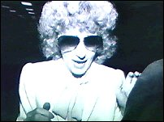

PART FIVE:
THE GUARDIAN'S OFFICE 1974-1980
"We had to establish a militant and
protective organization that could shield the church so that it could proceed peacefully
with its principal aims and functions, without becoming embroiled in the constant
skirmishing with those who wanted to annihilate us," a top ranking church official
told me.
- OMAR GARRISON, Playing
Dirty
CHAPTER ONE
The Guardian Unguarded
There is no more ethical group on this planet
than ourselves.
- L. RON HUBBARD in
"Keeping Scientology Working," 1965
The Office of the Guardian was created by Hubbard in a
Policy Letter of March 1, 1966. He gave this as the Guardian's purpose:
TO HELP LRH ENFORCE AND ISSUE POLICY, TO
SAFEGUARD SCIENTOLOGY ORGS, SCIENTOLOGISTS AND SCIENTOLOGY AND TO ENGAGE IN LONG TERM
PROMOTION. 1
In the Policy Letter, Hubbard spoke of the Guardian's
role in the collection of information, so "one can predict which way cats are going
to jump." The eventual downfall of the Guardian came through her use of methods which
showed precisely where certain cats planned to jump.
 Hubbard kept the job in the family by
appointing his wife, Mary Sue (right, in 1976), as the first Guardian. After
Hubbard took to the seas, Mary Sue joined him, and in January 1969, a new Guardian, Jane
Kember, was appointed. However, Mary Sue retained control of the Guardian's Office with
the creation of the Controller's Committee, which served as an interface between Hubbard
and the GO. Mary Sue Hubbard was appointed as the Controller "for life" by her
husband. 2
The headquarters of the Guardian's Office were at
Saint Hill in England. This was GO World Wide, or GOWW. In Hubbard's management system,
the continents differ from those of the geographers': along with many of its occupants,
Hubbard conceived the United Kingdom as a continent, quite distinct from Europe. America
was divided in two, not at the isthmus of Panama, nor even along the Mason-Dixon line, but
approximately at the Mississippi River. The Continental offices were: U.K., East U.S.,
West U.S., Europe, Australia and New Zealand, and Africa ("Latam" has been added
since). The GO had Continental offices in each, run by a Deputy Guardian. These in turn
had deputies in every Scientology Org, called Assistant Guardians. The Guardian's Office
had six Bureaus: Legal, Public Relations, Information (initially called Intelligence),
Social Coordination, Service (for GO staff training and auditing), and Finance. At GO
World Wide there was a Deputy Guardian dealing with each of these functions.
The Guardian's Office was administratively autonomous,
taking orders only from Hubbard or from the Controller, who in turn took orders only from
her husband. Usually GO staff did not belong to the Sea Org, and signed five-year rather
than billion-year contracts. Hubbard generated a powerful rivalry between the Sea Org and
the Guardian's Office.
The Guardian's Office image within the Church was of
an efficient, devoted group which dealt with threats to Scientology. They would counter
bad press articles (often by suing for libel), defend against government enquiries, and
promote Scientology through its good works. These good works were monitored by the Social
Coordination Bureau (SOCO). They included "Narconon," a drug rehabilitation
program; the Effective Education Association, Apple and Delphi Schools; and various
anti-psychiatry campaigns.
Because Hubbard insisted there was a conspiracy
against Scientology, the GO investigated and attacked the "conspirators"
tirelessly. By the 1970s, the GO had lined itself up against its "enemies,"
principally the entire psychiatric profession and civil governments. They produced a
newsletter called "Freedom," reminiscent of Fascist and Communist propaganda in
its overblown language.
On a day-to-day basis the Finance Bureau of the GO
oversaw the management of money within the Church. Each Org was supposed to have an
Assistant Guardian for Finance who would scrupulously monitor all payments to and from the
Org. Local Assistant Guardians would deal with bad press, and make sure no one who had
received psychiatric treatment, or had a criminal record, found their way onto Scientology
courses without first doing lengthy "eligibility programs." These usually
consisted of reading several Hubbard books over a six-month period, and writing
testimonials to show that they had applied Hubbard's teachings to their lives. Such people
would also have to waive the right to refunds of any type from Scientology.
Most Church members knew little or nothing about
Branch One of the GO Bureau of Information commonly referred to as "B-1." They
gathered information about Hubbard's "enemies." The Information Bureau's
Collections Department had two sections: Overt and Covert data collection. B-1 also housed
an Operations section, which should more properly have been called the Dirty Tricks
Department. B-1 was so self-contained that only the top executives in the other Guardian's
Office Bureaus were privy to their activities. B-I was Hubbard's private CIA, keeping tab
on friend and foe alike. They also maintained comprehensive files on all
Scientologists, compiled from the supposedly confidential records of confessional
sessions. At times Hubbard maintained daily, and even hourly, contact with B-1, sending
and receiving double-coded telex messages. 3
The Guardian's Office was the most powerful group
within the Church. Following Hubbard's rigid Policy, they could not believe in defense:
"The DEFENSE Of anything is UNTENABLE. The only way to defend anything is to
ATTACK." The GO attacked ruthlessly and relentlessly. 4
During 1968, while they were filing suits against all
and sundry for libel, one of the major targets in England was the National Association of
Mental Health (NAMH). Several trails crossed there. Lord Balniel, who first raised the
question of Scientology in Parliament, and Kenneth Robinson, the Health Minister who
invoked the Aliens Act, were both highly involved with the NAMH. Further, the NAMH was a
public body which had an influence upon the practice of psychiatry. So through their
campaign against the NAMH the GO thought they could kill several birds with one stone.
In November 1968, Hubbard issued a peculiar Executive
Directive called "The War" where he triumphantly announced: "You may not
realize it ... but there is only one small group that has hammered Dianetics and
Scientology for eighteen years. The press attacks, the public upsets you receive ... were
generated by this one group ... Last year we isolated a dozen men at the top. This year we
found the organization these used and all its connections over the world .... Psychiatry
and 'Mental Health' was chosen as a vehicle to undermine and destroy the West! And we
stood in their way." 5
The Church of Scientology dropped thirty-eight
complaints in Britain, and told the press this was "in celebration of the fact that
we now know who is behind the attacks on Scientology in Australia, New Zealand, South
Africa, and Britain." It was an "international group" that had just moved
its headquarters to Britain. 6
In December, a group calling itself the Executive
Committee of the Church of Scientology went to the National Association of Mental Health's
offices in London, and demanded a meeting with the Board of Directors. Being told that the
NAMH was governed by a Council of Management, none of whom was in the building, the
Scientologists deposited a list of questions, and departed.
Many of the questions were loaded. For instance:
"Why do your directors want to ban an American writer from England?" and
"Besides the human rights of English Scientologists, who else's human rights were you
attempting to restrict or abolish?"
The "American writer" was presumably not
unconnected with the Scientology Church; Hubbard had been labelled an undesirable alien
and denied re-entry to Britain only a few months before. The Council must have been
perplexed by the tenor of the questions. What on earth were the Scientologists suggesting?
But then, the Council had not seen LRH Executive Directive 55, "The War," and
they probably did not know that they were perhaps the most important channel for the
"World Bank Conspiracy," as Hubbard had dubbed it.
In February 1969, shortly after Hubbard's announcement
that Scientologists were to develop their image as "the people who are cleaning up
the field of mental healing," the NAMH was offered a settlement in a pending suit. A
few days later, the Scientologists started a series of demonstrations outside the NAMH's
offices. They marched with catchy slogans such as "Psychiatrists Make Good
Butchers" on their banners. 7
Then came Hubbard's bizarre secret directive
"Zones of Action," 8
instructing the takeover of Smersh and psychiatry. After a pause of several months, the
Guardian's Office took heed of Hubbard's order, and orchestrated the takeover of the
National Association of Mental Health. The plan was simple, as NAMH membership was open to
the public. The NAMH was governed by a Council, elected each year at the Annual General
Meeting. Time was a little tight, but five weeks before the meeting, Scientologists
started joining the Association in droves. The plan was a little too simple. The
NAMH noticed the sudden explosion of applications, from ten or so a month to over two
hundred. They also noticed that many of the Postal Orders paying the subscription bore the
stamp either of the East Grinstead or London's Tottenham Court Road Post Office, the
locations of the two principal English Scientology Orgs.
Five days before the election, the new Scientologist
members nominated eight of their number for the Council of Management, among them a Deputy
Guardian. Just two days before the vote, the NAMH demanded the resignation of 302 new
members.
The Guardian's Office responded by seeking an
injunction to prevent the Annual General Meeting. After elaborate proceedings, Justice
Megarry eventually ruled against the Scientologists. C.H. Rolph, in his well researched
book about the attempted takeover, Believe What You Like, described a later
tactic. In November 1970, the Scientologists offered a deed of covenant to the NAMH of
£20,000 a year for seven years, if the NAMH would discontinue its support for shock
therapy, resign its membership of the World Federation of Mental Health, and support a
Scientology Bill of Rights for mental patients. The NAMH was to "make no public
announcement of any sort" if it accepted the covenant. The offer was rejected. Soon
afterwards the NAMH received a copy of an article detailing nineteen of its alleged
shortcomings. To take up the story from Rolph: "among the latter being the sad story
of a house for mentally confused old ladies in which the luckless residents were punished
for misbehavior by being made to scrub floors. The grounds of this sinister place were
patrolled . . . by men with shotguns; though it did not say specifically that their task
was to shoot down any of the aged occupants caught running away."
Mary Sue Hubbard's deputy, Guardian Jane Kember, was a
fanatical Scientologist. It is worth quoting one of her Scientology Success Stories. It
was written in 1966, before the GO really gathered steam.
Before Scientology I couldn't have a baby,
having miscarriage after miscarriage. I have recently had twin boys, after training and
processing in Scientology. Before Scientology I had kidney trouble. I have no kidney
trouble now. Before Scientology I had skin trouble, chronic indigestion, was very nervous,
very unhappy, highly critical of all around me, felt inferior, inadequate and unable to
cope with life. Now the skin troubles have gone and the chronic indigestion. I am no
longer nervous, feel happy, have lost my inferiority complex and feel no need to criticize
others. 9
No wonder Kember later ran the Guardian's Office with
steely and unswerving devotion.
In 1971, Alexis, Ron's twenty-one-year-old daughter by
his second marriage, attempted to find him. Ron sent instructions to Jane Kember to deal
with what he saw as a potential embarrassment. Alexis is undoubtedly Hubbard's daughter,
but he had lost all paternal feeling for her, and had dropped contact with her after his
divorce from her mother in 1951.
On Hubbard's instructions, two GO agents visited
Alexis, and read a letter to her. Kember had followed her orders exactly. The letter had
been typed on a "non-general-use" typewriter, which is to say the typewriter was
used solely for this letter and then ditched. 10
The letter that Hubbard sent to Kember for her to
relay to Alexis came to light in the Armstrong case. Hubbard's description of events, as
given in the letter, is manifestly different from the facts. He claimed that Sara had been
his secretary in Georgia, at the end of 1948. In July 1949, she had arrived in New Jersey,
where Hubbard was supposedly working on a film script, flat broke and pregnant. Hubbard
referred to Sara's involvement with Jack Parsons, and claimed to be unsure who she had
lived with in Pasadena. He further claimed that Sara had tried to take the Los Angeles
Dianetic Foundation as part of a divorce settlement. Hubbard said that Sara could not
obtain such a settlement, because legally they had not been married. 11
The wording is crucial. Hubbard did not deny his
marriage to Sara, simply its legality. He was technically correct, the marriage, being
bigamous was illegal, but that was hardly the fault of either Alexis or Sara.
Under Jane Kember's direction, the Guardian's Office
ran scores of operations, many illegal, many more simply immoral. She irrefutably received
her orders from the Hubbards. Written orders survive.
In 1976, the GO was determined to silence all
opposition in the City of Clearwater. Mayor Cazares was its chief target. A GO agent,
posing as a reporter, interviewed the mayor when he was on a visit to Washington, DC. The
"reporter" introduced Cazares to Sharon Thomas, another GO agent. She offered to
show Cazares the sights of Washington. While they were driving, they ran into a
pedestrian. Sharon Thomas drove on. The mayor did not know that the "victim" of
the accident was yet another GO agent, Michael Meisner. 12
The GO was sure that it could use Cazares' failure to
report the accident to its advantage. The next day an internal dispatch gloated that
Cazares' political career was finished. That same day, Hubbard sent a dispatch asking
whether the Miami Cubans could be persuaded that Cazares supported Castro. 13
The GO initiated "Operation Italian Fog"
which was to bribe officials to put forged documents into Mexican records showing that
Cazares had been married twenty-five years before. The Scientologists could then accuse
him of bigamy.
To gain information for an inside story, an editor at
the Clearwater Sun enrolled on the Communication Course in the Tampa Org. The
staff at the Sun did not know that their every move was being leaked to the GO by
agent June Phillips. The Scientologists saw the editor's move as "infiltration"
and Phillips reported that the editor was traumatized when a suit was filed against him
and the Sun for a quarter of a million dollars. The Scientologists charged that
he had caused their members "extreme mental anguish, suffering and humiliation."
"Op Yellow," launched in April 1976, was to
consist of sending an anonymous letter to Clearwater businesses congratulating the mayor
for his Christian hostility to Scientology, and for keeping the Miami Jews out and the
Clearwater negroes where they belonged.
After the publication of her book The Scandal of
Scientology, in 1971, Paulette Cooper became a major target for harassment.
Distribution of her book was severely restricted through a series of court actions in
different states, and even different countries. Cooper simply did not have the legal or
financial resources to defend against all of these actions. As a result of a GO Op she was
indicted for making a bomb threat against the Church of Scientology. The GO wanted to
finish her off for good. Operation Freakout was intended to put Cooper either into prison
or into a mental hospital.
A U.S. Court Sentencing Memorandum gave this
description of Operation Freakout:
In its initial form Operation Freakout had
three different plans. The first required a woman to imitate Paulette Cooper's voice and
make telephone threats to Arab Consulates in New York. The second scheme involved mailing
a threatening letter to an Arab Consulate in such a fashion that it would appear to have
been done by Paulette Cooper. Finally, a Scientology field staff member was to impersonate
Paulette Cooper at a laundry and threaten the President and the then Secretary of State,
Henry Kissinger. A second Scientologist would thereafter advise the FBI of the threat.
Two additional plans to Operation Freakout were added
on April 13, 1976. The fourth plan called for Scientology field staff members who had
ingratiated themselves with Cooper to gather information from Cooper, so that Scientology
could assess the success of the first three plans. The fifth plan was for a Scientologist
to warn an Arab Consulate by telephone that Paulette Cooper had been talking about bombing
them.
The sixth and final part of Operation Freakout
called for Scientologists to obtain Paulette Cooper's fingerprints on a blank piece of
paper, type a threatening letter to Kissinger on that paper, and mail it. 14
GO operations were burgeoning. Operation Devil's Wop
was an attack on an Arizona senator who had supported anti-cult groups. The Clearwater
Chamber of Commerce had been infiltrated. Agents had been inside the American Psychiatric
Association for several years. The GO had penetrated anti-cult groups and newspapers, and
was beginning to move into U.S. government agencies, including the Coast Guard.
However, the vehement application of Fair Game, and
the use of the law to harass were making trouble for Hubbard. Those on the receiving end
wanted Hubbard himself to testify in court, which had to be avoided at all costs.
Elaborate precautions were taken to prevent process servers from reaching Hubbard. His
location was kept secret, and his retinue was ready to whisk him away at a moments notice.
In May 1976, Hubbard fled, shrouded in secrecy, from Washington, DC, to Culver City, a
suburb of Los Angeles. With him were only his wife and a few dedicated Sea Org staff. His
new location was codenamed Astra, and it maintained contact with, and control of,
Scientology through telex links to Church management in Clearwater, and to the Guardian's
Office in Los Angeles.
In June 1976, the GO received the first blow against
its elaborate and highly successful Intelligence machine. A GO agent who had infiltrated
the IRS was arrested. For a month the GO carried on with their Ops, confidently believing
that the agent's connections would never be traced.
Mayor Cazares was running as a congressional
candidate. As a part of "Op Keller" his opponent was offered supposedly damaging
information about Cazares. When the opponent declined the offer, a letter signed
"Sharon T" was mailed to politicians and newspapers in Florida. It sought to
implicate Cazares in the fake hit-and-run "accident" staged in Washington. To
cover the exits, an anonymous letter was sent to Cazares' opponent, Bill Young, saying the
"Sharon T" letter was Cazares' work, and that he would claim it had been a dirty
trick on Young's part! Young turned the letter over to the FBI.
In July, the GO instituted "Operation Bulldozer
Leak" which was supposed to convince the press and governments that Hubbard was no
longer involved in the management of the Church. Hubbard moved to a hacienda in La Quinta,
near Palm Springs in California. The hacienda was codenamed Rifle. About him he assembled
the Controller's staff (Mary Sue's assistants), a few chosen teenage Commodore's
Messengers, and his Household Unit. For a while, they took a vacation from Scientology,
fulfilling the pretense of Hubbard's lack of control. There were no Scientology books at
the hacienda, and the speaking of Scientologese was briefly forbidden. While the Commodore
fiddled, the Guardian's Office was beginning to burn.
Hubbard had been in such a rush to leave Florida that
he had left part of his gun collection behind. Shortly after "Op Bulldozer Leak"
the Assistant Guardian for Flag [Clearwater] reported that the Bureau of Alcohol, Tobacco
and Firearms had discovered some of Hubbard's guns, which had been mislaid in the flight
from Dunedin.
One of the guns was a Mauser machine-pistol, which
should have been registered. Somehow the GO managed to avert prosecution. But on the day
the report on Hubbard's guns was made, the FBI issued a warrant for the arrest of one
Michael Meisner. The FBI was beginning to make the necessary connections.
FOOTNOTES
Additional sources: C.H.
Rolph, Believe What You Like (André Deutsch, London 1973); St.
Petersburg Times, "Scientology."
1. Organization Executive
Course, vol. 7 pp. 494ff
2. Organization Executive
Course, vol. 7, p. 503
3. Interview with former
Hubbard telex encoder
4. Technical Bulletins of
Dianetics & Scientology vol. 2, p. 157
5. Hubbard Executive
Directive 55, "The War," 29 November 1968.
6. Rolph p.63; Daily
Telegraph, 26 November 1968
7. Organization Executive
Course, vol. 7, p. 521; Rolph, pp. 102 & 52f
8. Sea Org Executive
Directive 26 March 1969
9. Auditor 15, p.7
10. Sara Hollister to
Paulette Cooper, 1972; vol. 12 of transcript of Church of Scientology of California
vs. Gerald Armstrong, Superior Court for the County of Los Angeles, case no. C
420153, p.1940
11. Armstrong
exhibit 500-4L, Armstrong vol. 12, pp. 1946ff
12. Sentencing memorandum in
U.S.A. vs. Jane Kember, District Court DC, criminal case no., 78-401, p.25
13. St. Petersburg Times,
"Scientology," p.9
14. U.S.A. vs. Kember,
p.23 |